1 Android · Откройте страницу выпуска
Откройте страницу выпусков Kovetz на GitHub. В списке файлов свежего выпуска выберите APK для Android.
Начните с главы «Сначала сохраните копии». Дальше идите по одному шагу за раз. Ваши исходные файлы всегда остаются как были.
Kovetz помогает собрать ваши записи из JW Library в одном месте.
В телефоне могут быть одни заметки, а в планшете другие. Kovetz читает сохранённые копии с этих устройств и делает из них одну новую копию. В ней могут быть заметки, теги, выделения, закладки, избранное, ответы и списки воспроизведения.
Можно также сохранить заметки отдельным файлом для чтения или в папку для Obsidian. Чтобы вернуть записи в JW Library, восстановите копию в самой JW Library.
Достаточно выполнить шаги для своего телефона или компьютера.
Откройте страницу выпусков Kovetz на GitHub. В списке файлов свежего выпуска выберите APK для Android.
Дождитесь загрузки и нажмите на скачанный файл. Если телефон попросит разрешение, откройте предложенные настройки и разрешите установку из этого источника.
Вернитесь к установщику и нажмите «Установить». Когда появится кнопка «Открыть», нажмите её.
На странице выпусков Kovetz на GitHub выберите ZIP для Windows. Найдите скачанный файл в папке загрузок.
Щёлкните по ZIP правой кнопкой и выберите «Извлечь всё». Откройте папку, которая получилась.
Дважды щёлкните по файлу со значком Kovetz в этой папке. В списке файлов у него тип «Приложение». Оставьте остальные файлы рядом с ним.
На странице выпусков Kovetz на GitHub выберите архив для Linux. Это сжатый файл с двумя точками в конце имени.
В папке загрузок щёлкните по архиву правой кнопкой. Выберите «Извлечь сюда» или похожий пункт.
Откройте получившуюся папку и её внутреннюю папку с приложением. Запустите файл приложения со значком Kovetz и оставьте соседние папки на месте.
Откройте меню, нажмите «Обновления», затем «Проверить обновления». Дождитесь ответа.
Если появилась новая версия, нажмите «Скачать» или «Страница релиза». Во втором случае выберите файл для своего устройства на открывшейся странице GitHub.
На Android откройте новый APK и подтвердите обновление. На компьютере закройте старую версию, распакуйте новую в другую папку и запустите её оттуда.
С главного экрана можно начать работу и поменять вид приложения.
Нажмите «Объединить бэкапы» для общей копии или «Экспорт заметок» для чтения заметок вне JW Library. Для настроек нажмите кнопку с тремя полосками.
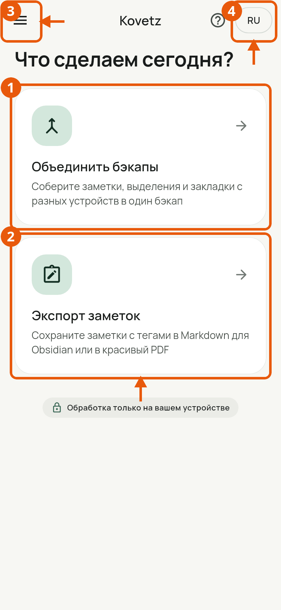
Нажмите кнопку с тремя полосками. Выберите нужную строку, например «Как пользоваться», или нажмите «Главная», чтобы закрыть меню.
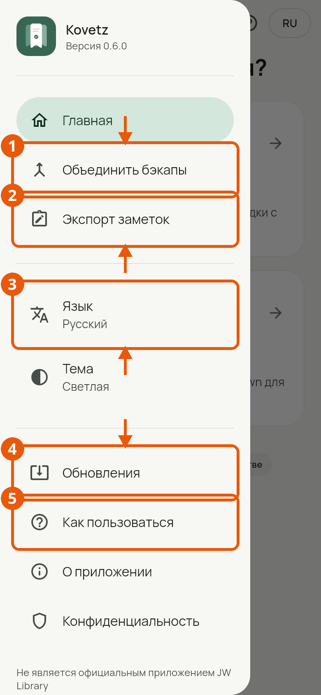
Нажмите кнопку с языком вверху или строку «Язык» в меню. В окне «Язык интерфейса» нажмите нужную строку.
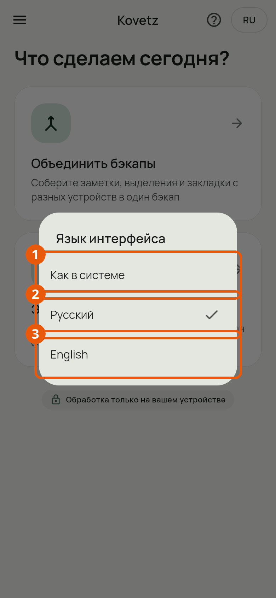
Откройте меню и нажмите «Тема». Нажмите «Светлая», «Тёмная» или «Системная», чтобы вид совпадал с настройкой устройства.
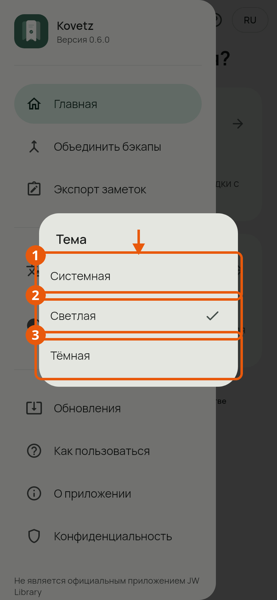
В меню нажмите «О приложении». Чтобы скопировать адрес проекта, нажмите «Исходный код — GitHub». Вставьте адрес в окно браузера, чтобы открыть страницу.
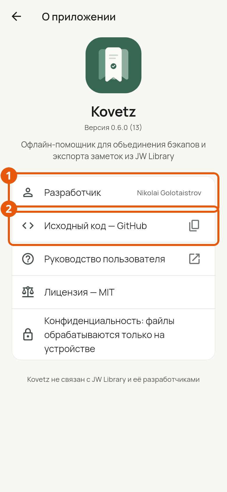
Свежая копия помогает вернуть записи телефона, если вы захотите вернуться назад.
На телефоне откройте JW Library. Перейдите в «Мои заметки».
Нажмите значок облака со стрелкой. Выберите создание резервной копии.
Выберите сохранение в файл, если телефон предложит варианты. Укажите папку, которую легко найти, и подтвердите сохранение.
Откройте папку в приложении для файлов. Запомните имя файла и место, где он лежит.
Повторите эти шаги на планшете и других устройствах с нужными записями. Если объединяете на компьютере, перенесите туда по копии каждого файла, например по кабелю.
Сохраните файлы, которые создала сама JW Library, в надёжном месте. Храните их и после объединения.
Три экрана помогут выбрать файлы, настроить правила и сохранить результат.
На главном экране нажмите «Объединить бэкапы». На экране «Файлы» нажмите «Выбрать файлы».
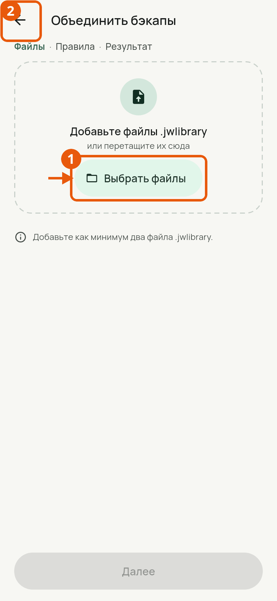
Выберите хотя бы две разные копии JW Library. Если получилось выбрать одну, снова нажмите «Выбрать файлы» и добавьте следующую.
Нажмите «Основной» со звёздочкой под нужным файлом. Этот файл задаёт порядок избранного и получает первый выбор мест для закладок.
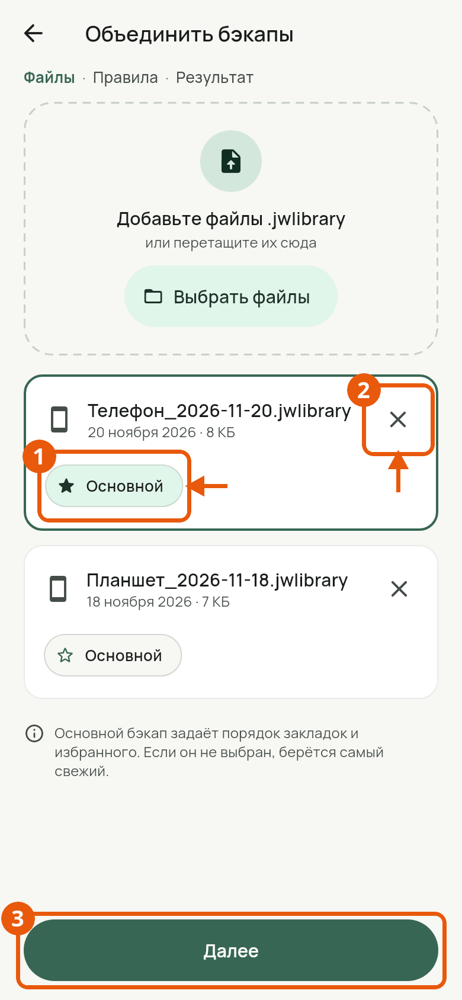
Если добавили лишний файл, нажмите крестик рядом с ним. Если звёздочка осталась пустой у всех файлов, приложение возьмёт самую свежую копию за основную. Нажмите «Далее».
В верхнем разделе нажмите «Самая свежая версия» или «Из основного бэкапа». Это правило нужно, когда одна и та же заметка была изменена по-разному.
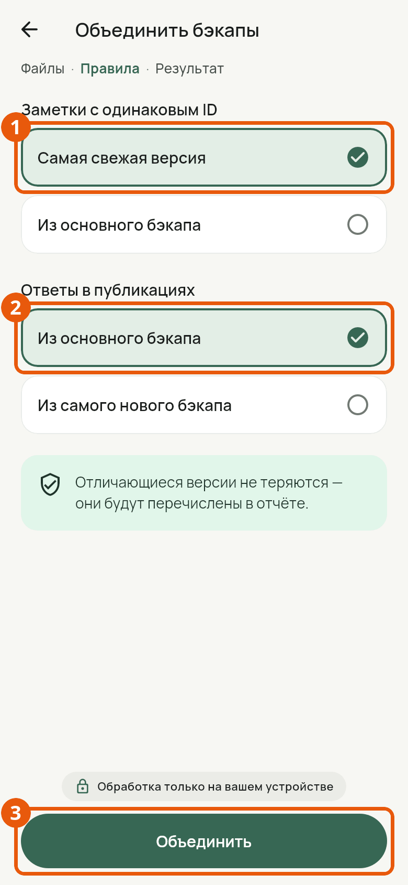
В разделе «Ответы в публикациях» нажмите «Из основного бэкапа» или «Из самого нового бэкапа». При втором выборе важна дата всей копии.
Нажмите «Объединить». Приложение откроет «Результат» и начнёт работу.
Пока круг движется, подождите. Если хотите остановиться, нажмите «Отменить» и дождитесь остановки. Исходные файлы останутся как были.
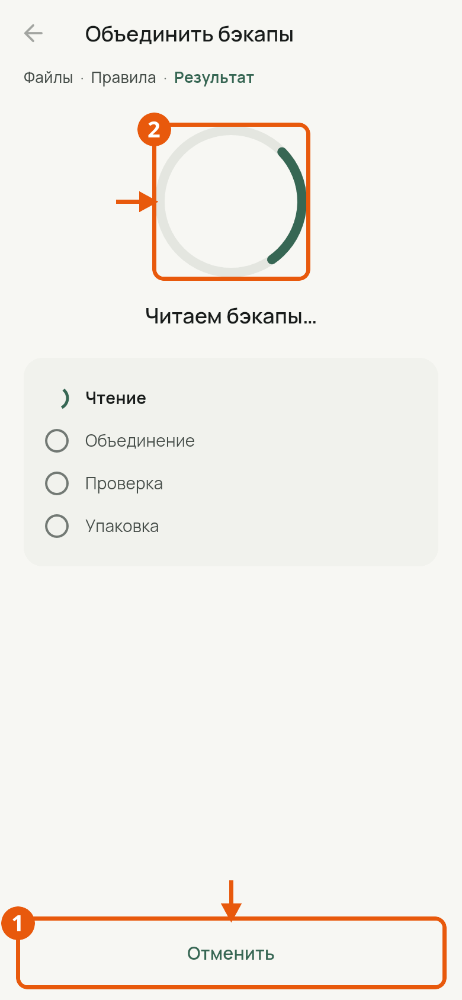
Когда увидите «Готово», посмотрите числа под заголовком. Если есть жёлтая строка «Проверьте записи», сохраните результат и прочитайте отчёт перед восстановлением.
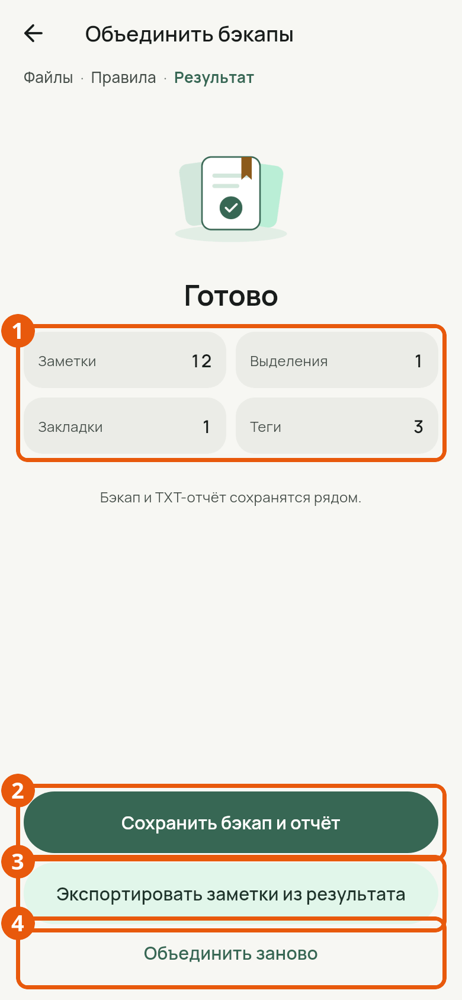
Нажмите «Сохранить бэкап и отчёт». На Android выберите папку и подтвердите выбор. На компьютере выберите папку и имя новой копии, затем нажмите «Сохранить».
Откройте выбранную папку и проверьте, что в ней есть новая копия JW Library и TXT-отчёт. Если было предупреждение, откройте отчёт как обычный текст.
Чтобы сохранить заметки отдельно, нажмите «Экспортировать заметки из результата». Чтобы выбрать файлы или правила ещё раз, нажмите «Объединить заново».
Проверьте свежую копию телефона перед тем, как восстановить общую.
Убедитесь, что у вас есть свежий файл из главы «Сначала сохраните копии». Восстановление заменит личные записи JW Library на этом телефоне.
Если общая копия лежит на компьютере, скопируйте её на телефон, например по кабелю. Для восстановления нужен сам файл копии JW Library, а TXT-отчёт можно оставить рядом.
Откройте JW Library и перейдите в «Мои заметки». Нажмите значок облака со стрелкой и выберите «Восстановить».
Выберите общую копию из нужной папки. Если телефон открыл файл прямо в JW Library, дождитесь предложения восстановить его.
Проверьте, что выбран нужный файл. Подтвердите восстановление и дождитесь его окончания.
Откройте «Мои заметки» и найдите знакомую заметку с каждого устройства. Проверьте также несколько важных тегов, закладок или выделений.
Проверьте, что открыли саму общую копию и что файл перенёсся целиком. Если ошибка повторяется, снова объедините исходные копии в свежей версии Kovetz и сохраните результат под новым именем.
Если новая копия не подходит, тем же способом восстановите свежую копию самого телефона. Если ошибка повторяется с общей копией, запишите её текст и версию Kovetz из «О приложении» для разработчика.
Заметки можно сохранить как папку для чтения или как книгу.
Приложение сохраняет ваш текст из заметок. Обычно в файл попадают только заметки с тегами. Выделения, закладки и текст публикаций отдельно не выгружаются.
На главном экране нажмите «Экспорт заметок», затем «Выбрать бэкап». Выберите файл JW Library и дождитесь списка.
На экране «Готово» нажмите «Экспортировать заметки из результата». Если вы открыли обычную копию и хотите взять другую, нажмите «Изменить».
Нажмите «Поиск по заметкам» и введите слово. Нажмите тег под поиском, чтобы увидеть заметки с этой меткой.
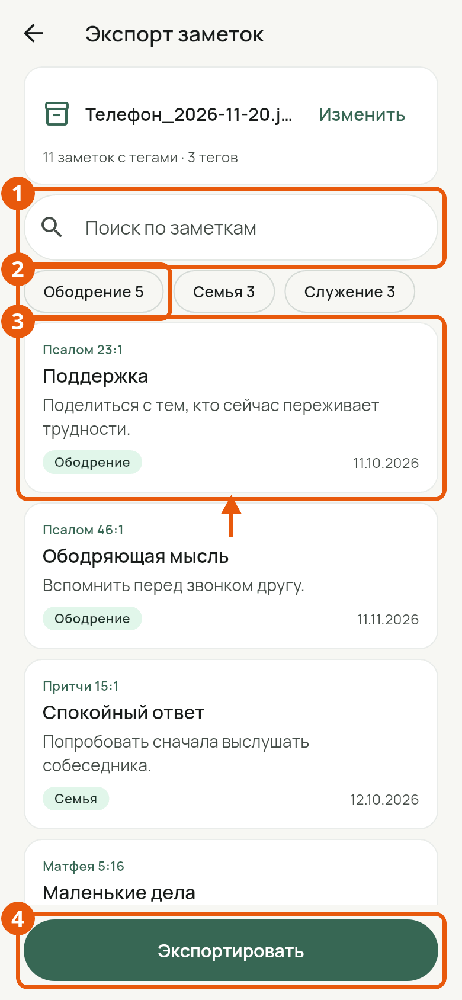
Чтобы убрать поиск, нажмите крестик «Очистить», а для отмены отбора по тегу нажмите этот тег ещё раз. Нажмите «Экспортировать». Поиск и выбор тега меняют только список на экране.
Нажмите «Markdown для Obsidian». Если хотите взять и заметки без меток, включите «Добавить заметки без тегов».
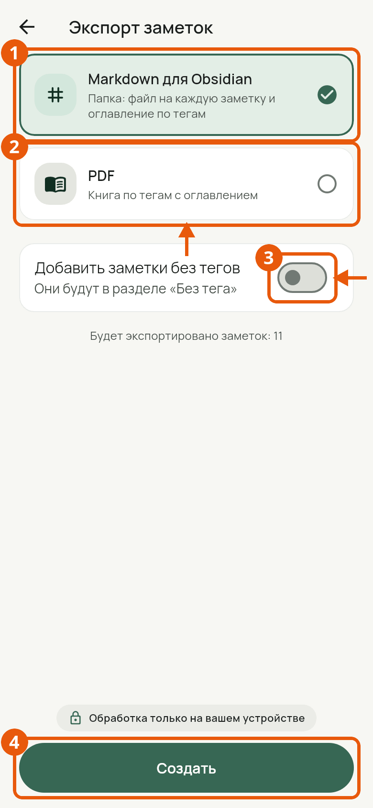
Нажмите «Создать». На компьютере выберите место для новой папки, а на Android укажите, куда сохранить ZIP.
На Android найдите ZIP в приложении для файлов. Откройте его и выберите «Распаковать» или похожую кнопку. На компьютере готовая папка уже есть.
Откройте Obsidian и выберите открытие папки как хранилища. Укажите всю папку с экспортом, в которой виден «Указатель».
Нажмите «Указатель», чтобы перейти к тегам. В папке «Заметки» лежит по файлу на заметку, а в «Теги» лежат списки заметок по темам.
На экране выбора вида файла нажмите «PDF». По желанию включите «Добавить заметки без тегов», чтобы получить раздел «Без тега».
В разделе «Порядок внутри тега» нажмите «По Библии и публикациям» или «По дате», от ранних заметок к поздним. Нажмите «Создать». Дождитесь окна сохранения и выберите место для файла.
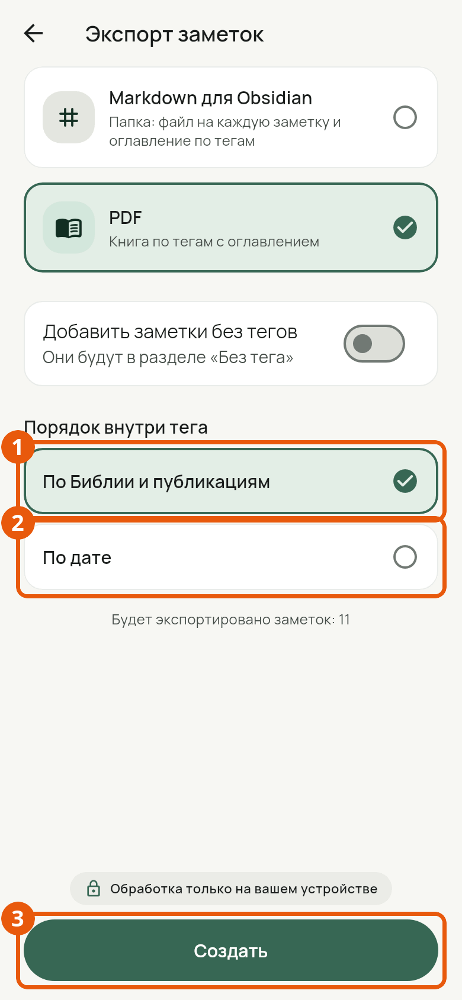
Откройте сохранённый PDF. Чтобы перейти к теме, нажмите название тега в «Оглавлении по тегам» или найдите нужную страницу вручную.
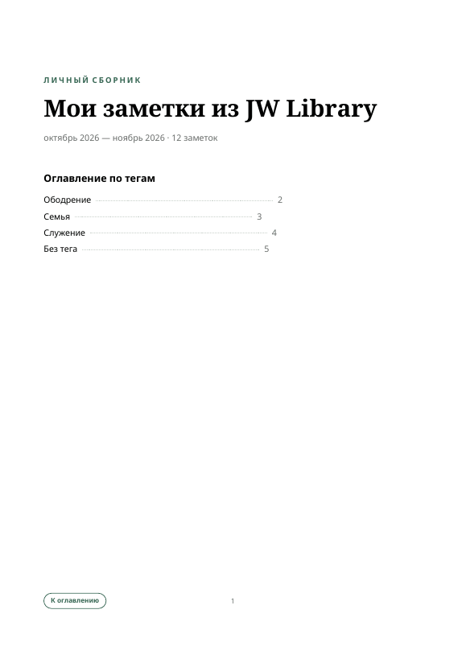
Листайте страницы выбранной темы. На странице книги нажимать кнопки не нужно. Если у заметки несколько тегов, она напечатана по одному разу в каждом из этих разделов.

Настройки можно менять в любое время.
Откройте меню и нажмите «Язык». В окне «Язык интерфейса» нажмите «Русский», строку с английским языком или «Как в системе».
Откройте меню и нажмите «Тема». Выберите «Светлая», «Тёмная» или «Системная».
Откройте меню и нажмите «Обновления». Нажмите «Проверить обновления» и подождите.
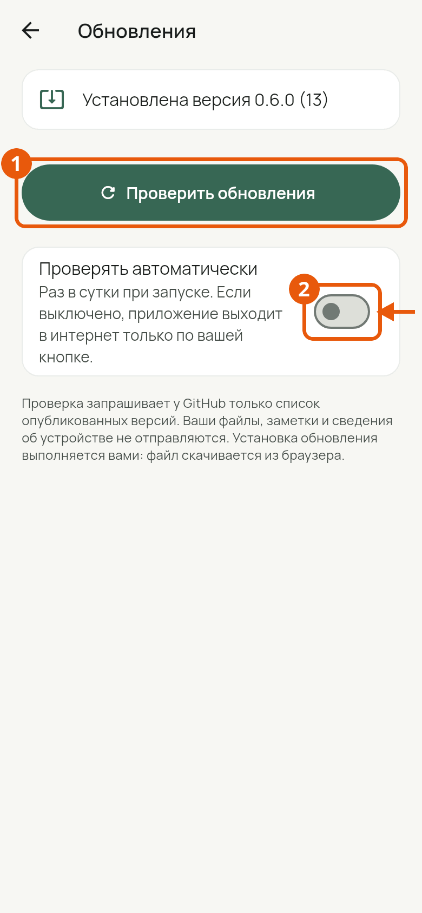
Если написано «У вас последняя версия», можно продолжать работу. Если новая версия доступна, нажмите «Скачать» или «Страница релиза» и вернитесь к главе «Установка и обновление».
Нажмите «Проверять автоматически», если хотите проверку при запуске раз в сутки. Сначала она выключена. Чтобы снова проверять только по кнопке, выключите её.
Для проверки Kovetz запрашивает у GitHub только список опубликованных версий. Проверка не отправляет ваши файлы, заметки или сведения об устройстве.
Найдите знакомое сообщение или случай и попробуйте указанный шаг.
Перед сообщением может стоять имя файла. Оно подсказывает, какую копию проверить.
Файл может быть другого вида или перенесён не полностью. Возьмите копию, которую создала JW Library, и перенесите её заново.
Две части файла по-разному описывают его вид. Сделайте новую копию в JW Library и добавьте её.
Приложение встретило незнакомый способ хранения записей. Проверьте обновления и, если ошибка повторится, запишите точный текст для разработчика.
Приложение пока не умеет читать такую копию. Сохраните её и попробуйте свежую копию из обновлённой JW Library.
Часть записей ссылается на другие записи, которых в файле нет. Выберите исправную исходную копию с нужного устройства.
Записи внутри файла не прошли проверку. Перенесите исходную копию ещё раз или создайте свежую в JW Library.
Проверка показала, что содержимое отличается от сохранённого. Возьмите исходный файл и перенесите его ещё раз или сделайте новую копию.
Приложение остановилось из-за размера копии. Если есть более лёгкая исходная копия с нужными записями, попробуйте её и сохраните большую у себя.
Приложение не может прочитать отчёт внутри старого результата. Выберите копии, которые создала сама JW Library.
В копии нет файла, нужного списку воспроизведения. Добавьте свежую копию с устройства, где этот файл ещё есть.
Проверьте, что файл открывается с устройства и что в папке сохранения достаточно места. Повторите попытку или выберите другую папку.
Приложение остановилось по кнопке «Отменить». Чтобы начать снова, вернитесь к правилам и нажмите «Объединить».
Что-то пошло не так внутри приложения, а исходные файлы остались как были. Повторите попытку один раз и, если ошибка вернётся, запишите её текст и версию приложения для разработчика.
Одного файла или двух одинаковых копий мало. Нажмите «Выбрать файлы» и добавьте другую копию JW Library.
Например, выбранная основная копия может быть недоступна. Вернитесь к списку, проверьте файлы и снова нажмите «Основной» под нужной копией.
Для «Далее» добавьте две разные копии, а для «Экспортировать» возьмите копию хотя бы с одной заметкой с тегом. Если приложение ещё читает или сохраняет файл, дождитесь окончания.
Вернитесь к экрану «Файлы» и нажмите крестик «Убрать файл» рядом с лишним именем. Если нужно, добавьте правильную копию кнопкой «Выбрать файлы».
Если меняли язык, файлы или правила, нажмите «Объединить заново». Проверьте список и правила, затем нажмите «Объединить», чтобы снова можно было сохранить результат или заметки.
Проверьте подключение и позже снова нажмите «Проверить обновления». Пока связи нет, можно объединять копии и сохранять заметки.
Если закрыли окно сохранения, снова нажмите «Сохранить бэкап и отчёт» или «Создать» для заметок. Если закрыли окно выбора копии, откройте его снова, когда будете готовы.
Проверьте свободное место и выберите другую папку или новое имя. Если приложение предупреждает о неполных файлах, используйте новый результат только после сообщения об успешном сохранении.
Файлы обрабатываются на вашем телефоне или компьютере.
Исходные файлы остаются там, где вы их положили. Новый бэкап, отчёт и выгруженные заметки сохраняются в выбранном вами месте. Отчёт тоже может содержать личный текст.
Интернет нужен приложению только для проверки обновлений. Приложение просит у GitHub список выпусков. Бэкапы, заметки и сведения об устройстве не отправляются.
Во время работы приложение делает временные копии в своём служебном месте на устройстве. После работы оно их убирает. Если работа прервалась, оно старается убрать оставшиеся копии при следующем запуске.
Здесь собраны короткие объяснения слов, которые встречаются на экране.